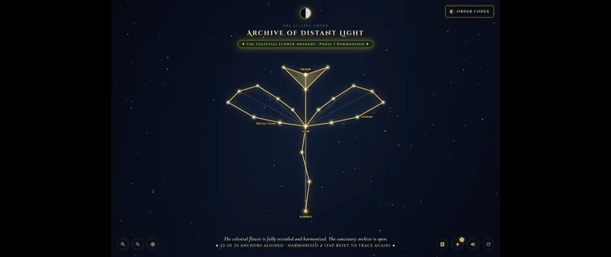

Game 03 · Harmonized & Completed ✓
The Celestial Flower
The original 22-star harmonic dial at the gateway of the mountains. Silvia aligned the planetary petals, harmonizing the resonance channels into motion before the raid.